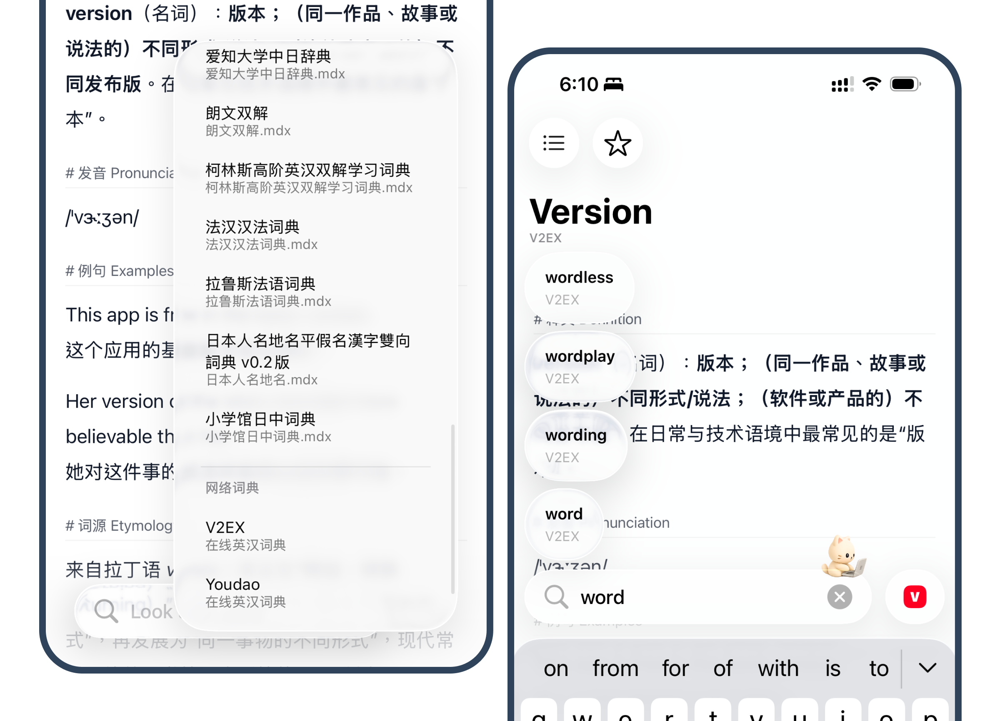
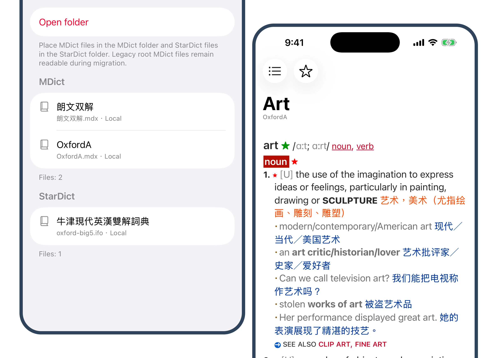
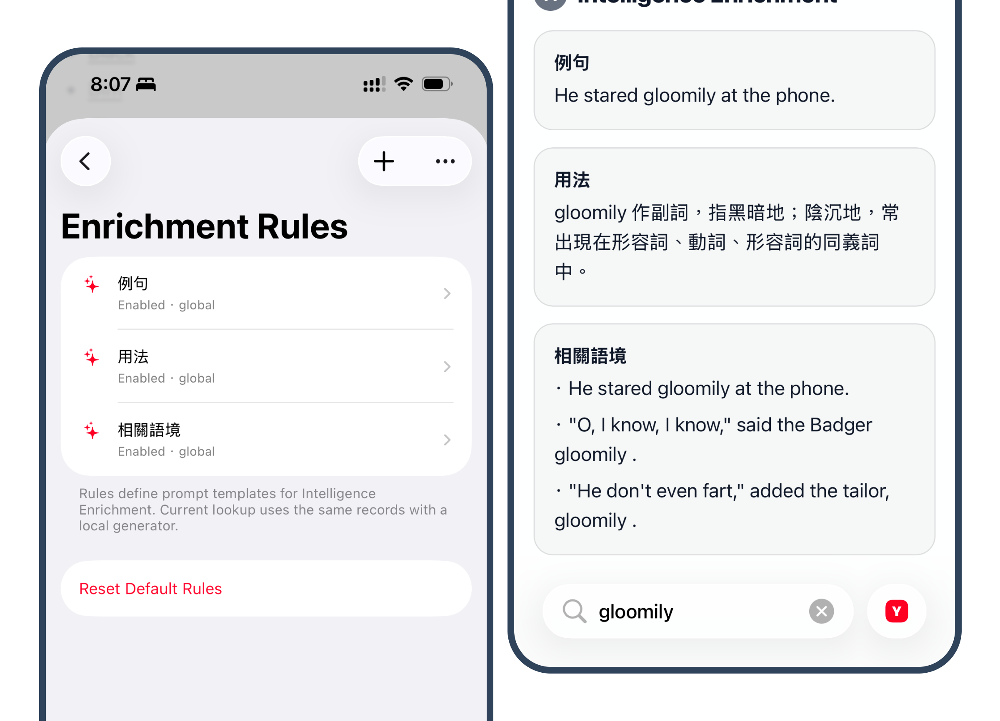

Writing
aDict 3.0 Beta: An Update for Existing Users
aDict,Dictionary,Product,Notes · 2026-05-20
If you used aDict before, this update is mainly for you: aDict is back.
Version 3.0 is not a small maintenance update. I rebuilt and reorganized an old dictionary app that had been sitting quietly for a long time. The new version is currently available through TestFlight, and the App Store update has not been released yet. If the TestFlight page shows existing App Store information, that is Apple displaying the current public store metadata. It does not mean that version 3.0 is already live on the App Store. After joining TestFlight and installing the beta, you will get the 3.0 build.
My goal is still simple: when you are reading on iPhone, iPad, or Mac and run into a word you are not sure about, aDict should let you look it up quickly without first deciding which website, dictionary, or tool to open.
What Changed in 3.0
The older version of aDict was mostly a lightweight lookup tool. Version 3.0 keeps that direction, but the app has been rebuilt around clearer pieces:
- Online dictionary sources
- Local dictionary files
- Source switching
- Input suggestions
- Lookup history
- Favorites
- A shared workflow across iPhone, iPad, and Mac
You do not need to prepare local dictionary files before using the new version. You can start with the built-in online sources and use it as a simple lookup tool. If you already have your own MDX, MDD, or StarDict files, you can import them later and use them in the same lookup flow.

Online Sources Are the Starting Point
In this version, online dictionaries are placed closer to the front of the experience. Many users do not need to manage a full personal dictionary library. They just want a reliable lookup entry point while reading.
The current beta includes online sources such as Youdao and V2EX Dict. Different sources serve different purposes. Some are better for concise definitions, while others can provide examples, word origins, related expressions, or contextual notes. aDict does not merge them into one black box. Instead, it lets you switch between sources when needed.
This is one of the areas I still want to refine: lookup should feel fast, source switching should be obvious, and the result page should stay quiet enough for daily use.
Local Dictionaries Are Still Supported
If you originally used aDict because of local dictionaries, that path is still there.
The current beta supports:
- MDict / MDX / MDD
- StarDict
- Same-name resource file detection
- One-dictionary-per-folder organization
- Local dictionary source switching
- Local dictionary file management
The one-dictionary-per-folder layout was added after early testing feedback. Initially, I mainly considered structures where files such as .mdx, .mdd, .css, and .js share the same name and sit together. That missed a common real-world workflow: many users keep each dictionary in its own folder for long-term organization. That was my oversight, and later builds have added support for this layout.

Apple Intelligence Support Is Still Early
Version 3.0 also includes an early experimental feature related to Apple Intelligence. It can add configurable enrichment blocks to lookup results, such as example sentences, usage notes, or related context.
I do not want to present this as a finished core feature yet. Right now, it is an early test of whether this kind of enrichment layer is actually useful in real reading and lookup scenarios. The rules, interface, and generated output you see now should not be treated as the final version.
If you enjoy trying new app features, this part may be interesting. If you only want a clean dictionary tool, you can simply focus on the online sources and local dictionary support first.

How Existing Users Can Read This Update
I do not want to describe 3.0 as a finished destination. A better way to put it is this: the old aDict has been rebuilt into a version that can keep moving forward.
If you only used aDict occasionally for quick lookup, you can try the new online sources, input suggestions, history, and favorites to see whether the daily flow feels smoother.
If you used aDict for local dictionaries, you can check whether MDX / MDD / StarDict import, resource detection, folder organization, and rendering now match your actual workflow better.
If you use a Mac, you can also try whether the same lookup flow feels natural on desktop.
Links
Landing page:
TestFlight:
https://testflight.apple.com/join/dCGMvyw9
Current App Store page:
https://apps.apple.com/in/app/adict-dictionary-lookup/id1483402597
Again, version 3.0 is currently a TestFlight beta, not the public App Store update. The TestFlight page may show the existing App Store metadata, but after joining the beta and installing it, you will receive the 3.0 build.
Feedback
If you try the 3.0 beta and run into issues, import failures, rendering problems, or any part of the flow that feels awkward, you can reach me through the Telegram group.
Telegram Group:
For me, the most important question for aDict 3.0 is not whether the feature list looks long enough. It is whether the app can once again become a small tool that stays on your device for a long time and is ready whenever you need to look something up.